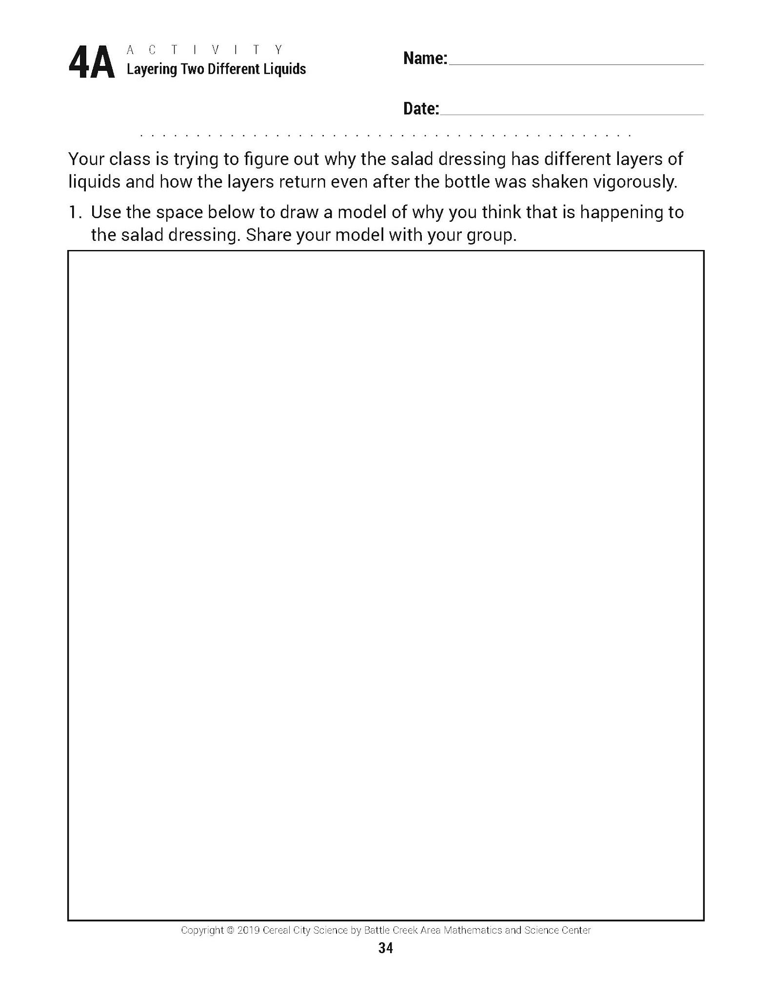
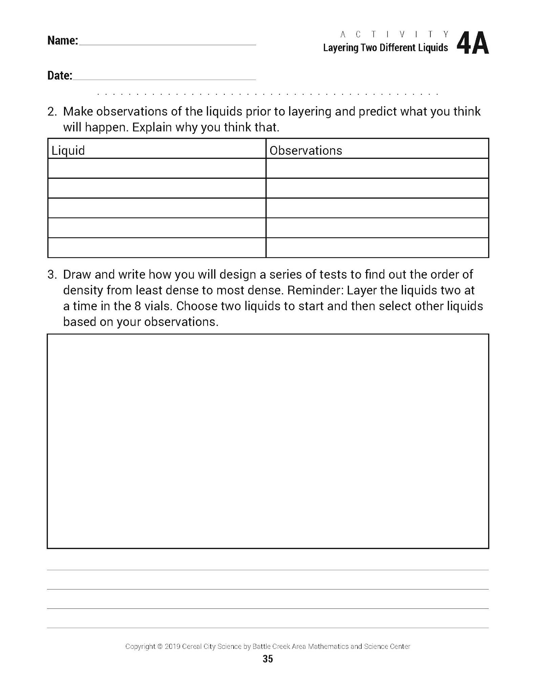
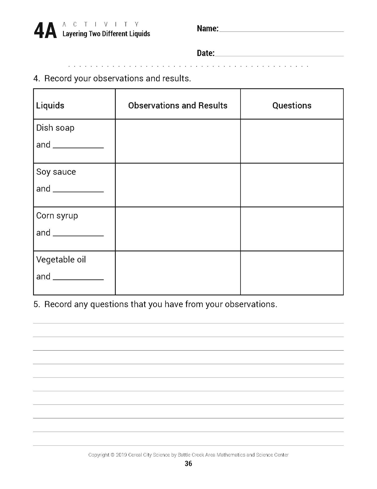

Activity 4A • Layering Two Different LiquidsJournal page 34 of 84
Name: ______________________________Date: _______________
Your class is trying to figure out why the salad dressing has different layers of liquids and how the layers return even after the bottle was shaken vigorously.
1. Use the space below to draw a model of why you think that is happening to the salad dressing. Share your model with your group.
Compare with original journal page 34
This is the unmarked scanned page for checking original diagrams, exact wording, or layout. The editable HTML content is above.

Activity 4A • Layering Two Different LiquidsJournal page 35 of 84
Name: ______________________________Date: _______________
2. Make observations of the liquids prior to layering and predict what you think will happen. Explain why you think that.
3. Draw and write how you will design a series of tests to find out the order of density from least dense to most dense. Reminder: Layer the liquids two at a time in the 8 vials. Choose two liquids to start and then select other liquids based on your observations.
Compare with original journal page 35
This is the unmarked scanned page for checking original diagrams, exact wording, or layout. The editable HTML content is above.

Activity 4A • Layering Two Different LiquidsJournal page 36 of 84
Name: ______________________________Date: _______________
4. Record your observations and results.
| Liquids | Observations and Results | Questions |
|---|
| Dish soap and ______ | | |
| Soy sauce and ______ | | |
| Corn syrup and ______ | | |
| Vegetable oil and ______ | | |
5. Record any questions that you have from your observations.
Compare with original journal page 36
This is the unmarked scanned page for checking original diagrams, exact wording, or layout. The editable HTML content is above.
